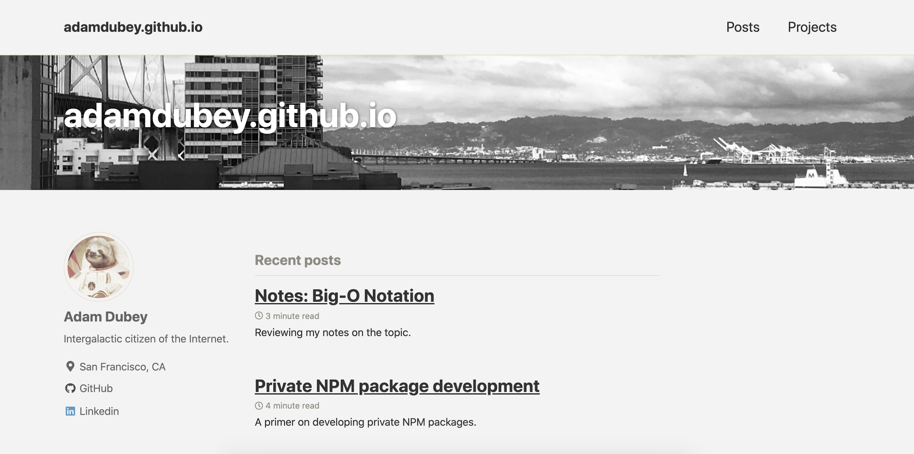
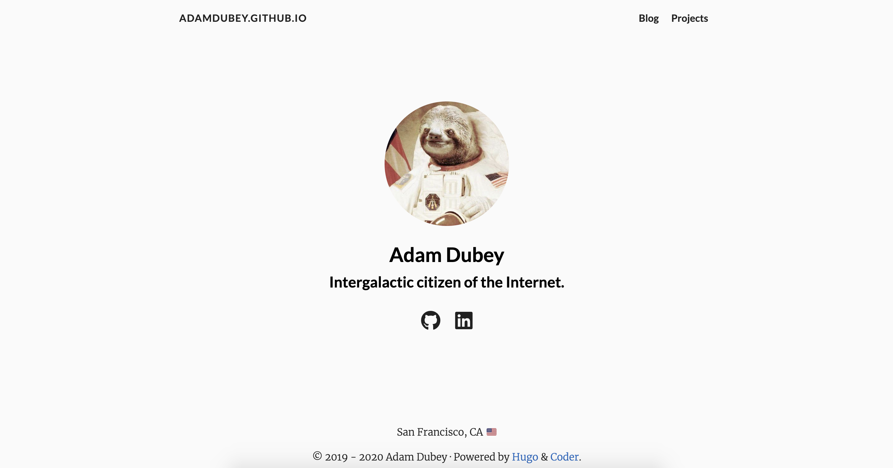

Summer Hackathon 2020: Migrating to Hugo
Migrating to Hugo
I've really put this project off for too long…
It's finally time to migrate my blog (this site) to Hugo from Jekyll. The primary reason and desire to do this is simply because I have just grown tired of juggling all of the nuances with the Ruby/Jekyll ecosystems. While I still support a few project sites powered by Jekyll, I'd rather focus more on crafting content for my blog and less effort on maintenance.
So Hugo, welcome - glad you are the solution here! I've yet to spend more than a few hours tinkering with this tech stack, but overall:
- it's fast and intuitive
- gentle learning curve (pick a theme you like, and follow the basic example structures provided)
- way less bloat than you get with the Ruby/Jekyll stack
Well with some extra time in the schedule, and it currently being Summer, I felt inspired to set a fun challenge to tackle this migration… a Hackathon!
My Summer Hackathon 2020: A new challenger appears!
Okay, this is starting to become exciting - dedicate a few days to just primarily focus on this migration project and take care of some housekeeping with a bit of backlogged material, and bonus points to aligning the event with the weekend to get a few late nights of work in.
Project Outline:
- Setup Hugo/template framework
- Configuration details
- Migrate existing posts/projects
- Establish deployment workflow
- Bonus Points for CI/CD integration (it'll happen either way 😏)
My proposed schedule:
Basically just mixing the Olympics with a Hackathon…
I felt this to be a good balance of dedicated time to allocate, especially since I still have to go to work and deal with some other ongoing projects. All in all, I think I could've cut a day out of this and still would be fine.
- Day 0: 18 June
- Day 1: 19 June
- Day 2: 20 June
- Day 3: 21 June
- Day 4: 22 June
Ultimately, the target goal is 80% of the migration in a completed state, I don't want to rush this, and am purposely setting the stage to just enjoy working through any challenges that come my way. Additionally, I don't anticipate deploying the site until a few days afterwards just so I can cross-check everything before launch.
Deploying 🚀
It seems there are a few ways of deploying a Hugo site…? Yeah I don't know what the most pragmatic approach to deployments is, since the official documentation doesn't quite make it easy for just a single repo site hosting because all the variations I've tried ended as failure to launch.

I want my Hugo blog damnit!
However, when it came time to deploy this time I got it on the first try! 😍
Here are the steps I took to deliver a successful deployment:
NOTE: You only need to deploy the contents of /public onto the master branch!
- Run
hugoto build the site and produce the/publicartifact - You only need to deploy the contents of
/public; - Lazy way is to just copy/pasta the files from
/publicover to the root project directory - Commit & Push;
- Follow typical PR workflow to merge into
master
And that's it… that was the “magic bullet” that worked for me. So far it's been the only process that has worked every time for just “Hugo blog + Github Pages hosting” deployments. Now it's certainly not the most glamorous way of going about it, but it's easy to automate based on your workflow.
Unfortunately I ran short on time to really focus on building and defining a CI/CD pipeline for this project, and just haven't implemented anything quite yet. At some point I'll have some form of git hook + CI server to perform the heavy lifting and management of building. You can get a sense of all sorts of variations and possibilities around automating your workflow… The sky's the limit as to what you can automate!
Results & Reflections
Wow, what a huge difference! I found my workflows with Hugo way more streamlined than before with Jekyll, which is a huge plus! 👍 Also, I'd be remiss if I didn't mention not having to worry about several different flavors of syntax, just Markdown and Yaml (for the most part).
Overall I really enjoyed framing this project as a Hackathon. Sometimes it really helps to just change your frame of mind as frankly I haven't been feeling inspired to do much work on personal projects. Simply just dedicating a few days of just exclusively work on this project, I was able to complete the migration quickly and really reignite a renewed sense of passion once more!
Lastly, a look at where the site has come from, and where it is currently:
(Jekyll) Legacy V1 Site:

(Hugo) Current V2 Site:

Thank you very much for reading!